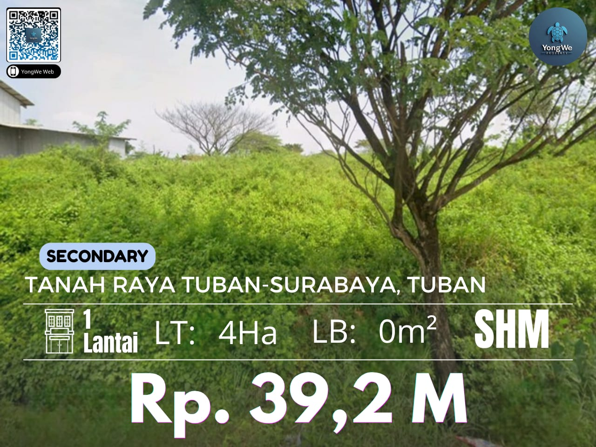

Secondary Jawa Timur
Semua Kategori
🏠 Rumah
🏢 Apartment
🌳 Tanah
🏬 Gudang
🏪 Ruko
🏭 Pabrik
🏪 Rumah Usaha

Tanah
*Secondary Jawa Timur*
Tanah Raya Tuban-Surabaya, Tuban
Luas 4Ha(100x400)
SHM
Harga 39,2 M
(980rb/m2)